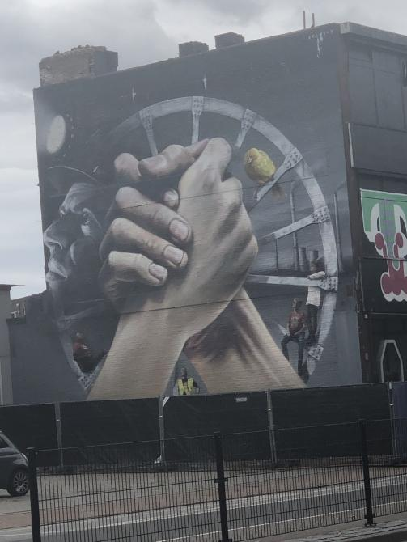

Mijnverleden heerlen

Beschrijving
De vakbeweging FNV deed deze mural cadeau aan Heerlen, omdat ze 50 jaar na de mijnsluiting en in het Jaar van de Mijnen iets wilde bijdragen. Oud-mijnwerkers, zogenaamde koempels, waaronder zelfs een 99-jarige, waren uitgenodigd bij de presentatie. Handen ineen, samen voor een sociale maatschappij, dat heeft kunstenaar Super A (zie ook nr. 1) verbeeld. Op de spaken van het grote wiel van de liftschacht, waarin de koempels tot een halve eeuw geleden dagelijks de gang naar beneden maakten, zijn de hedendaagse exponenten afgebeeld van de strijd voor een sociale maatschappij. Er gloort licht, de koempel op de gevel kijkt hoopvol omhoog, de toekomst tegemoet, bij gestraald door het licht van zijn kenmerkende ‘petlamp’.